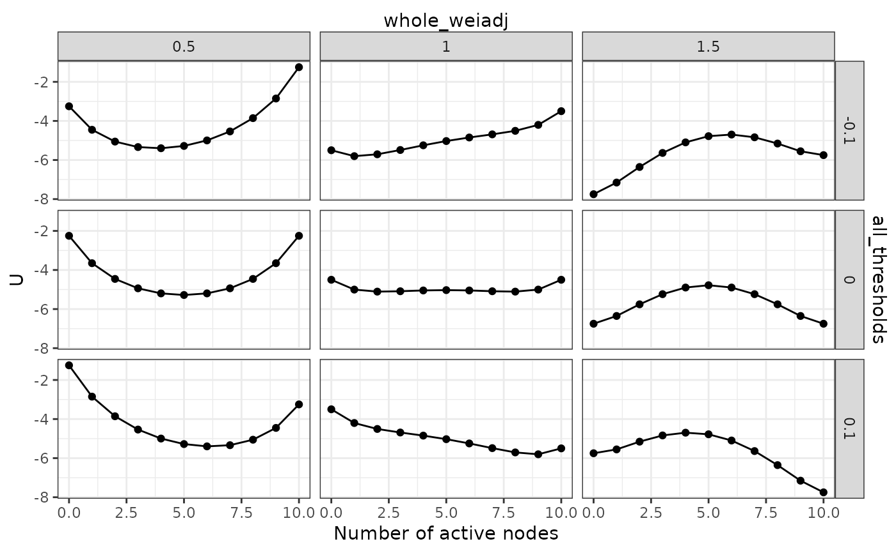

Make a matrix of landscapes for multiple Ising networks
Source:R/landscape.R
make_2d_Isingland_matrix.RdMake multiple landscapes together for different parameters.
Arguments
- Ising_grid
Parameter values generated by
make_Ising_grid().- transform
By default, this function considers the Ising network to use
-1and1for two states. Settransform = TRUEif the Ising network uses0and1for two states, which is often the case for the Ising networks estimated usingIsingFit::IsingFit().
Value
A 2d_Isingland_matrix object that contains the following
components:
dist_raw,distTwo tibbles containing the probability distribution and the potential values for different states.NvarThe number of variables (nodes) in the Ising network.
Examples
Nvar <- 10
m <- rep(0, Nvar)
w <- matrix(0.1, Nvar, Nvar)
diag(w) <- 0
result4 <- make_Ising_grid(
all_thresholds(seq(-0.1, 0.1, 0.1), .f = `+`),
whole_weiadj(seq(0.5, 1.5, 0.5)),
m, w
) %>% make_2d_Isingland_matrix()
plot(result4)
#> Scale for x is already present.
#> Adding another scale for x, which will replace the existing scale.
